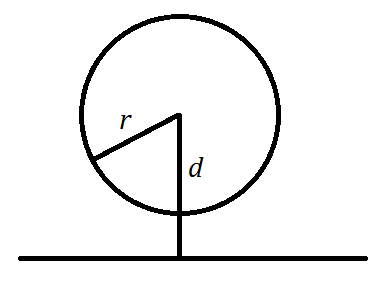

平面解析几何的学习笔记——圆与圆锥曲线
圆
曲线与方程
设二元函数 $F(x,y)$，对于平面直角坐标系中的曲线 $C$，若方程 $F(x,y)=0$ 的解对应的点都在曲线上，并且曲线上的点都满足方程 $F(x,y)=0$，那么就说 $F(x,y)=0$ 是曲线 $C$ 的方程，曲线 $C$ 是方程 $F(x,y)=0$ 的曲线。
这里需要注意的是方程的解集与曲线的点是一一对应的，与函数不同，同一个横坐标，函数只能有一个纵坐标，而曲线是可以有任意个。
圆的方程
圆的标准方程
首先考察圆的定义：圆就是到定点的距离等于定长的点的集合。定点称之为圆心，定长称之为圆的半径。在平面直角坐标系中，设定点的坐标为 $(a,b)$，则平面上任意一点 $(x,y)$ 到该点的距离为
而以该点为圆心，半径为 $r$ 的圆可以用集合
所以，可以用后面的方程表示这个圆，满足这个方程的点构成这个圆。然而有根号，不完美，平方可得
这就是圆的标准方程。其中 $(a,b)$ 表示该圆的圆心，$r$ 表示圆的半径。

若令
则对于点 $(x,y)$，
- 若 $f(x,y)=r^2$，则该点在圆上；
- 若 $f(x,y)<r^2$，则该点在圆内；
- 若 $f(x,y)>r^2$，则该点在圆外。
本质上就是比较到圆心的距离与半径的大小关系。
圆的一般方程
对于标准方程 $(x-a)^2+(y-b)^2=r^2$，将其展开后
可以发现，一定没有交叉项 $xy$，$x^2$ 与 $y^2$ 前的系数为 $1$ （其实不为 $1$ 也可以，可同时除掉），故可以设该方程为
另外，该方程配方后的常数项肯定不能为正数，否则移过去后为负数，又因为两个平方之和大于 $0$，这样的方程就没有点。
故有
即
所以，完整的来说，方程
为圆的一般方程。
圆与直线的位置关系
众所周之，圆与直线有三种位置关系：相交、相切、相离。
从直线与圆心的距离考虑：
- 圆心到直线距离小于半径（ $d<r$ ）相交

- 圆心到直线距离等于半径（ $d=r$ ）相切

- 圆心到直线距离大于半径（ $d>r$ ）相离

也可从直线方程与圆方程联立的解的个数考虑：
- 若有两个解，则为相交
- 若有且仅有一个解，则为相切
- 若无解，则为相离
圆的切线方程与切点弦方程
众所周之，一个函数的切线的斜率是该点的导数，而圆可以看作是个隐函数，故考虑用隐函数求导的方法，再用点斜式写出方程。
若圆为 $x^2+y^2=r^2$，两边同时对 $x$ 求导，注意到 $y=y(x)$，可得
设圆上点为 $(x_0,y_0)$，则过该点的圆的切线方程为
同理，对于圆心不是圆点的圆 $(x-a)^2+(y-b)^2=r^2$，两边对 $x$ 求导，可得
代入可得
可以简单记作「代一半」。
若该点是圆外的一点，则用「代一半」的方法求得的方程就是该点到直线的两条切线的切点连线的方程，简称切点弦方程。
如图

设圆心在圆点（任意位置同理），则 $l_1,l_2$ 两条直线的方程为
又同时经过 $(x_0,y_0)$，代入有
由 $(1)$ 式可知 $(a,b)$ 在方程 $x_0x+y_0y=r^2$ 上；由 $(2)$ 式可知 $(c,d)$ 也在方程 $x_0x+y_0y=r^2$ 上；又因为两点确定一条直线，所以 $(a,b)$，$(c,d)$ 连线的直线的方程为
而这正是「代一半」得到的结果。
综上，可知对于圆 $(x-a)^2+(y-b)^2=r^2$ 和点 $(x_0,y_0)$，若
- $(x_0,y_0)$ 在圆上，则 $(x_0-a)(x-a)+(y_0-a)(y-a)=r^2$ 为该点圆的切线方程；
- $(x_0,y_0)$ 在圆外，则 $(x_0-a)(x-a)+(y_0-a)(y-a)=r^2$ 为该点对应的圆的切点弦方程。
圆与圆的位置关系
与两个圆都相切的直线叫做这两个圆的公切线。
设大圆半径为 $R$，小圆半径为 $r$，圆心距离为 $d$，圆与圆的位置关系有五种：
- 外离

当 $d>R+r$ 时，为外离。总共有四条公切线，注意两条蓝色的公切线。
- 外切

当 $d=R+r$ 时，为外切。总共有三条公切线。
- 相交
当 $R-r<d<R+r$ 时，为相交，此时有两个交点，两条公切线。
- 内切
当 $d=R-r$ 时，为内切，此时有且仅有一条公切线。
- 内含
当 $d<R-r$ 时，为内含，此时没有公切线。
总结一下，如表所示。
| 位置关系 | 对应的数量关系 | 公切线 | 两圆的交点个数 |
|---|---|---|---|
| 外离 | $d>R+r$ | 4 | 0 |
| 外切 | $d=R+r$ | 3 | 1 |
| 相交 | $R-r<d<R+r$ | 2 | 2 |
| 内切 | $d=R-r$ | 1 | 1 |
| 内含 | $d<R-r$ | 0 | 0 |
圆系方程
何为圆系方程？可以理解为有公共特点的若干个圆方程。类比直线系方程，所有斜率为 $2$ 的方程，其表示为 $y=2x+b$，而 $b\in \mathbb{R}$，这个方程表示若干个直线，这些直线都有一个共同点就是斜率为 $2$。圆系方程亦是如此。
最简单的圆系方程就是圆心为 $(a,b)$ 的所有圆：$(x-a)^2+(y-b)^2=r^2$，$r>0$。
最多应用的圆系方程便是过两圆交点的圆系方程。
设两圆分别为
并令
假设两圆交于 $A(x_1,y_1)$ 与 $B(x_2,y_2)$。需要求的就是过 $A,B$ 的所有圆方程。
先说结论，圆方程为
其中 $k_1,k_2\in \mathbb{R}\& k_1+k_2\neq 0$。如果只是理解，首先 $C_3$ 是个圆，将 $A,B$ 两点代入，显然成立，但不能说明所有过这两个点的方程可以写成这种形式。
考虑函数
如图，设过 $A,B$ 的圆上的另一点 $C(x_0,y_0)$。
如果能够对于 $A,B,C$ 三个点，满足 $f_3(x,y)=0$，那么这个方程就是过这三个点的圆方程。对于 $A,B$ 显然满足，对于 $C$，则需要证明一定存在一组 $k_1,k_2$ 让 $C$ 代入 $f_3(x,y)$ 也等于 $0$。当 $k_1=-f_2(x_0,y_0)$，$k_2=f_1(x_0,y_0)$ 时，代入 $C$ 点，可以得到 $0$。所以方程
就是过这三点的圆的方程，而 $C$ 点是任意的，所以系数是不固定的，用参数表示。而系数为相反数时，即
时，都不为圆方程，显然要排除在外。
虽然设了两个参数，但更常用的是设一个参数：
此时要注意 $C_2$ 也是一种情况。
而当 $k_1+k_2=0$ 或者 $k=-1$ 时，这个方程表示的是过这两个圆的交点的直线方程。考虑方程
这显然是直线的形式，而将 $A,B$ 两点代入，显然为 $0$，所以 $f_3(x,y)=0$ 就是过这两个点的直线。
一条直线 $Ax+By+C=0$ 与圆 $x^2+y^2+Dx+Ey+F=0$ 交于两个点，过这两个点的圆系方程为
理解同上。
椭圆
椭圆的第一定义与标准方程
椭圆的一种定义是到两个顶点的距离和为定值的点的集合。这两个顶点叫做焦点，通常用 $F_1,F_2$ 表示，焦点之间的距离，即 $|F_1F_2|$ 为椭圆的焦距，如图。
尝试求一求它的方程。
设椭圆上的点 $M(x,y)$，$F_1(-c,0)$，$F_2(c,0)$，并设定长为 $2a$。根据定义，有
由 $2a>2c$，可知 $a^2-c^2>0$。如图，连结 $C$ 与 $F_2$。
由于 $CF_1=CF_2=a$，$OF_2=c$，所以 $a^2-c^2=b^2$，所以原方程为
这是椭圆标准方程。
需要注意的是这是「躺」的椭圆，「竖」的椭圆 $a,b$ 大小相反，或者说为
另外，椭圆中 $AB$ 较之于 $CD$ 长，故称为长轴，同理 $CD$ 称之为短轴。长轴两端的点的坐标为 $(-a,0),(a,0)$ 或者 $(0,-a),(0,a)$；短轴两端的点的坐标为 $(0,-b),(0,b)$ 或者 $(-b,0),(b,0)$。